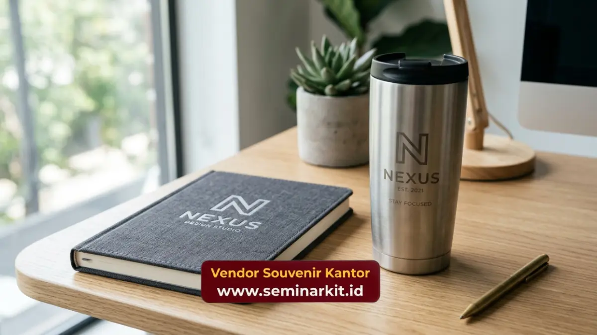

Souvenir kantor custom logo adalah merchandise perusahaan yang dicetak atau diberi identitas visual berupa logo, warna, dan elemen brand tertentu untuk memperkuat pengenalan merek.
Produk ini banyak digunakan perusahaan sebagai media branding yang bersifat jangka panjang karena dipakai berulang oleh penerimanya.
Ketiga fungsi utama souvenir custom logo adalah memperluas eksposur merek, membangun kesan profesional, dan menjadi pengingat visual yang konsisten bagi karyawan maupun klien.
- Souvenir kantor custom logo berfungsi sebagai media branding yang dipakai berulang oleh penerimanya
- Konsistensi visual logo pada produk mempengaruhi tingkat pengenalan merek perusahaan
- Pemilihan produk custom logo perlu disesuaikan dengan target penerima dan tujuan penggunaan
- vendorsouvenirkantor.web.id menyediakan layanan pembuatan souvenir kantor custom logo sesuai kebutuhan branding Anda
Apa Itu Souvenir Kantor Custom Logo?
Souvenir kantor custom logo adalah produk merchandise yang dipersonalisasi dengan logo, nama, atau elemen identitas visual perusahaan melalui proses cetak, embos, ukir, maupun bordir.
Proses customisasi ini dilakukan pada tahap produksi sehingga logo menyatu dengan material produk, bukan sekadar stiker tempel yang mudah lepas.
Konsep custom logo pada souvenir kantor berbeda dari merchandise generik yang dijual di pasaran.
Souvenir custom logo dirancang khusus mengikuti guideline brand perusahaan, mulai dari pemilihan warna, jenis font, hingga penempatan logo pada produk, sehingga hasil akhirnya selaras dengan identitas visual perusahaan secara keseluruhan.
Mengapa Custom Logo Penting dalam Souvenir Kantor?
Custom logo penting dalam souvenir kantor karena berperan langsung dalam membangun brand recognition, yaitu kemampuan audiens mengenali merek hanya dari elemen visual tertentu.
Semakin konsisten logo ditampilkan pada berbagai produk, semakin kuat pula asosiasi audiens terhadap merek perusahaan.
Konsistensi Visual Memperkuat Identitas Brand
Penggunaan logo yang konsisten pada seluruh lini souvenir kantor membantu perusahaan membangun citra yang solid di mata karyawan, klien, dan mitra bisnis.
Konsistensi ini mencakup kesamaan warna, tipografi, dan proporsi logo pada setiap jenis produk yang diproduksi.
Eksposur Berulang Meningkatkan Brand Recall
Produk souvenir custom logo yang digunakan sehari-hari, seperti tumbler atau alat tulis, memberikan eksposur berulang terhadap logo perusahaan.
Semakin sering audiens melihat logo tersebut dalam konteks positif, semakin besar pula peluang merek diingat saat dibutuhkan di kemudian hari.
Produk Apa Saja yang Cocok untuk Custom Logo Kantor?
Produk yang paling cocok untuk custom logo kantor meliputi alat tulis, tumbler, tas, dan paket hampers, karena memiliki permukaan yang ideal untuk berbagai teknik cetak logo serta tingkat penggunaan yang tinggi oleh penerimanya.
Alat tulis seperti notebook dan pulpen umumnya menggunakan teknik cetak sablon atau UV printing untuk menampilkan logo secara presisi.
Tumbler dan mug lebih sering menggunakan teknik laser engraving atau printing khusus permukaan logam maupun keramik agar hasil logo tahan lama dan tidak mudah pudar.
Tas kanvas dan totebag umumnya menggunakan teknik bordir atau sablon digital, tergantung tingkat detail logo yang diinginkan.
Sementara itu, paket hampers biasanya menampilkan logo pada kemasan luar sebagai elemen branding utama, dengan isi produk yang dapat disesuaikan sesuai kebutuhan dan anggaran perusahaan.

Bagaimana Teknik Cetak Logo Mempengaruhi Kualitas Souvenir Kantor?
Teknik cetak logo yang dipilih secara langsung mempengaruhi daya tahan, tampilan, dan kesan premium dari souvenir kantor yang dihasilkan. Pemilihan teknik yang tepat perlu disesuaikan dengan jenis material produk agar hasil cetakan optimal.
Sablon digital cocok untuk produksi dalam jumlah besar dengan detail warna yang kompleks, namun daya tahannya perlu diperhatikan pada produk yang sering terkena gesekan.
Laser engraving memberikan hasil yang lebih tahan lama pada material logam atau kayu, meskipun umumnya hanya menghasilkan warna monokrom sesuai warna dasar material.
Bordir memberikan kesan premium pada produk berbahan kain, namun umumnya memerlukan biaya produksi yang lebih tinggi dibanding teknik sablon.
Perusahaan perlu mempertimbangkan keseimbangan antara anggaran, kualitas hasil akhir, dan kesan yang ingin dibangun melalui souvenir kantor custom logo tersebut.
Wujudkan Souvenir Kantor Custom Logo Berkualitas Bersama Kami
Souvenir kantor custom logo yang tepat mampu memperkuat citra profesional perusahaan sekaligus meninggalkan kesan positif bagi karyawan dan klien. vendorsouvenirkantor.web.id siap membantu mewujudkan konsep custom logo sesuai identitas brand perusahaan Anda, mulai dari konsultasi desain hingga produksi akhir.
Kunjungi vendorsouvenirkantor.web.id untuk mulai merancang souvenir kantor custom logo perusahaan Anda.
Souvenir kantor custom logo merupakan investasi branding yang memberikan dampak jangka panjang melalui eksposur berulang dan konsistensi visual merek.
Pemilihan produk dan teknik cetak yang tepat menjadi faktor penentu hasil akhir yang maksimal. Segera konsultasikan kebutuhan souvenir kantor custom logo perusahaan Anda bersama vendorsouvenirkantor.web.id.

Banner promosi: klik gambar untuk langsung terhubung ke WhatsApp tim sales.